Fitted CV user guide
Fitted CV gives you a CV fitted to every job ad in a few minutes. It rewrites the lines recruiters read first so they match the ad, using only things you really did, and makes a ready-to-send PDF in each of your languages. Fitted CV is the first product from FITTED.
Why fit your CV to each ad? Recruiters first scan job titles, employers and keywords, in seconds. In a study of almost 2 million applications, tailored CVs got 1.85× as many interviews (Huntr, 2026). Fitted CV makes that tailoring quick, and keeps it honest.
Your first fitted CV in five steps
- Bring your CV in. Import your PDF or Word CV, or your LinkedIn or Indeed profile saved as PDF (section 2).
- Connect an AI. A free one is fine (section 3).
- Paste the job link. Fitted fetches the ad, company and role (section 4).
- Draft with AI, then check every line. Nothing goes on your CV until you confirm it's true (section 5).
- Pick a style and build. You get one PDF per language, plus a row in your applications list (sections 5 and 6).
The rest of this guide walks through every page of the app in the order you meet them.
1. Getting started
Download Fitted from getfitted.nl. It is free for your first 3 jobs.
| Device | What to download | First start |
|---|---|---|
| Windows 10 or 11 | Fitted CV in the Microsoft Store | Click Get. Fitted CV then opens from the Start menu, and the Store keeps it up to date. |
| Mac with Apple silicon (M1 or newer) | Fitted-mac-apple-silicon.dmg | Open the file and drag Fitted into Applications. If macOS says it can't check Fitted: System Settings → Privacy & Security → Open Anyway. |
| Mac with Intel | Fitted-mac-intel.dmg | Same as above. |
| Android 7 or newer | Fitted-android.apk | Tap the downloaded file. Android asks once to allow installs from your browser: switch on Allow from this source and go back. |
These warnings appear only the first time. Updates install from inside Fitted without them.
You need an AI account for drafting lines, translating and importing your CV. Several AIs have a free option; Fitted helps you set one up on the next page.
Where your files live
- Windows and Mac: a folder called Fitted on your Desktop, with your CV, settings, the applications list (applications.xlsx) and an Applications folder with a folder per job, named by date, company and role (for example "2026-11-03 Acme - Team Lead"), holding its PDFs, ready to send. "About this folder.txt" explains what is where.
- Android: inside the Fitted app. Use Share to send a PDF anywhere.
2. Set up your CV
You do this once. Fitted turns your existing CV into its own editable version, without adding anything that isn't in it. Your CV stays in its own language, which becomes your base CV.
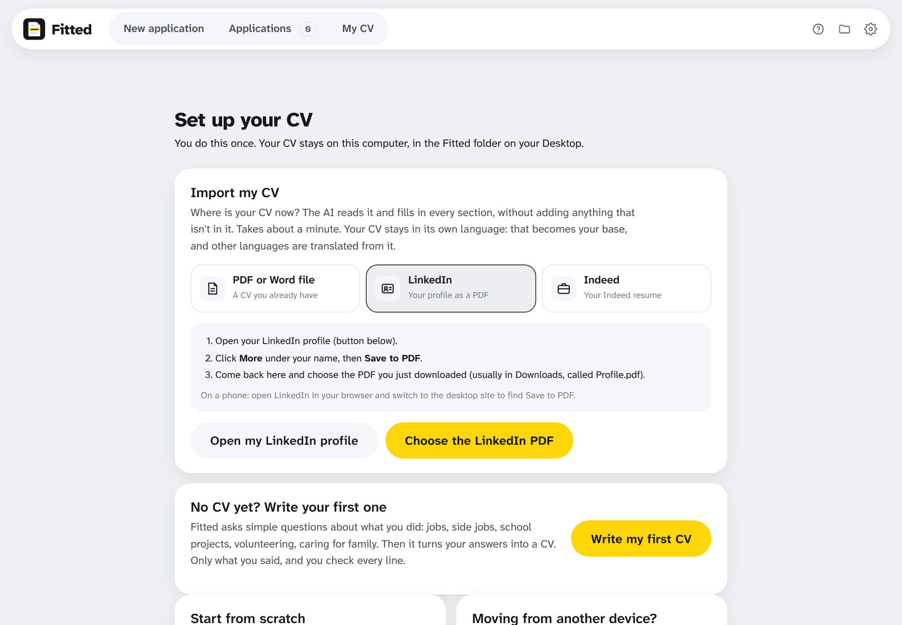
Where is your CV now? Pick one of three sources:
| Source | What to do |
|---|---|
| PDF or Word file | Click Choose CV file and pick your CV (.pdf or .docx). |
| Click Open my LinkedIn profile, then More → Save to PDF under your name. Come back and click Choose the LinkedIn PDF (usually Profile.pdf in Downloads). On a phone, use the desktop version of the LinkedIn site. | |
| Indeed | Click Open my Indeed profile, open the ⋮ menu at your resume and choose Download. Come back and click Choose the Indeed PDF. |
LinkedIn and Indeed don't let other apps read your profile directly, so the PDF download is the way in.
AI that reads your CV. If no AI is set up yet, the box above the button asks for one. Pick a provider, click Get a key, paste the key and click Connect. See section 3 for which AI to choose.
The import takes about a minute. Then Fitted opens My CV so you can check every section and click Save changes.
Other ways to start
- Write my first CV: no CV yet? See below.
- Start from scratch: pick the language, then type your CV into the editor yourself.
- Open a Fitted data file: load a cv-data.json from an earlier setup or a backup.
Write my first CV
Never made a CV, or been away from work for a while? Click Write my first CV. Fitted asks simple questions, in five short steps:
- About you: your name, how employers can reach you, and what kind of work you're looking for.
- What you did: everything counts, not only jobs. Pick what it was (job, side job, internship, volunteering, school project, caring for family, sport or club) and answer two questions: what did you do on a normal day? and what went well, or what are you proud of?
- School: your school, studies or courses.
- Skills: what you're good at, and the languages you speak.
- Your CV: click Write my CV. Fitted turns your answers into CV lines, using only what you wrote. Or click Use my own words as they are.
While you type, your CV grows on the page next to the questions. After writing, click any line on that page to change it. Tick Everything on this CV is true and click Save as my CV: it becomes your base CV, ready to tailor to job ads.
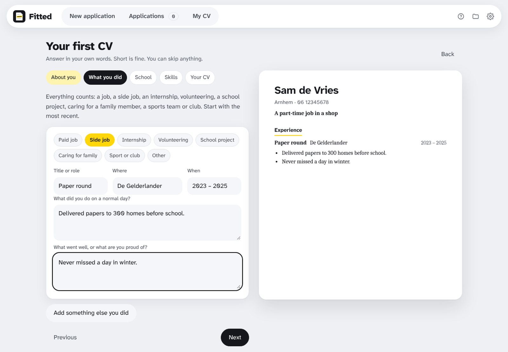
3. Settings: AI, languages, licence
Open Settings with the gear icon at the top right (on a phone: the Settings tab). Your AI key stays on your own device.
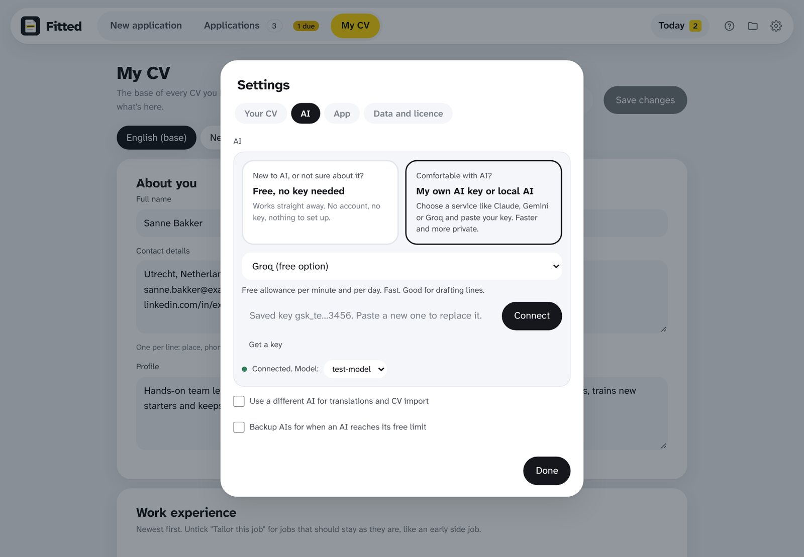
New to AI? Choose the free one. Settings starts with one question. New to AI, or not sure about it? Pick Free, no key needed and click Connect: Fitted uses free public AI services, with no account and nothing to set up. Your CV text and job ads are sent to those services, and free services can be slow at busy times. Comfortable with AI? Pick My own AI key or local AI for a faster and more private setup.
Choosing your own AI. With your own account you pay the AI provider directly, or nothing on a free plan.
| AI | Cost | Good to know |
|---|---|---|
| Claude (Anthropic) | Paid per use | Most reliable for translations and CV import. |
| Google Gemini | Free plan available | On the free plan Google may use what you send to improve its products; Fitted shows a warning. |
| Groq | Free allowance | Fast; good for drafting lines. |
| OpenRouter | Free models available | One key for many AI models. |
| Local AI (Ollama) | Free | Runs on your own computer, nothing leaves it. Install Ollama and download a model first. |
| Other compatible service | Depends | For services that work like OpenAI's. |
Pick one, click Get a key, paste it and click Connect. Fitted tests the key and picks a suitable model; you can change the model afterwards.
A different AI for translations and CV import. Tick this to use a stronger AI for the heavy jobs (translating your whole CV, importing it) and a cheaper or free one for drafting lines.
Backup AIs. Tick Backup AIs for when an AI reaches its free limit and add up to two more AIs, such as Groq and Google Gemini (both free). When your AI is over its limit or very busy, Fitted switches to the next one by itself and tells you which one did the job. If you have no backup yet and hit a limit, the message has an Add a free backup AI button that takes you straight there.
CV languages. Click Change to choose the languages you apply in: English, Dutch, German, French, Spanish, Italian, Portuguese, Swedish, Danish and Norwegian. Your AI translates your CV once into each new language; you can check and edit each translation under My CV.
Base CV. Your base CV is in the language you imported or wrote it in: a German CV stays German. You edit the base under My CV, and the other languages are translated from it. To make another language the base, pick it here (its translation must be up to date). The base language can't be removed.
CV photo. Click Add photo and choose a JPG or PNG. Fitted turns it upright, crops it to a portrait and shows a small preview. Under Show on, tick the languages whose CVs should show it; German is ticked by default. The photo sits at the top right in every CV style. A photo is usual in Germany, Austria and Switzerland, and best left off in the Netherlands, the UK and the US. Change photo and Remove do what they say.
Language of Fitted. Fitted follows the language of your computer or phone: Dutch if it's set to Dutch, otherwise English. Choose Automatic, English or Nederlands to change it. This is only the app's own screens; your CV languages are set separately.
Move to another device. Make a backup file puts your CV, photo, applications and every job folder in one .zip. On the new computer or phone, choose Bring in a backup (also on the very first screen). What was on that device is kept first, in the Backups folder. AI keys and your licence stay on the device they belong to, so set up your AI again on the new one.
Working faster. Load the ad as soon as you paste a link, draft straight after, keyboard shortcuts, and (Windows and Mac) Offer to load a job link I copy: copy a job link anywhere, switch back to Fitted, and it offers to load the job or add it to your list. Fitted only looks at links and keeps nothing. Show the quick start guide when Fitted starts turns the start-up guide on or off; Open the quick start guide and Show the tour again open them any time.
Licence. Shows your free jobs left. After buying, paste your licence key here and click Activate. One licence works on 2 devices; use Deactivate on this computer to move it.
Version. Shows your version and lets you check for updates.
4. New application
This is where you tailor your CV to one job ad, in four steps on one page.
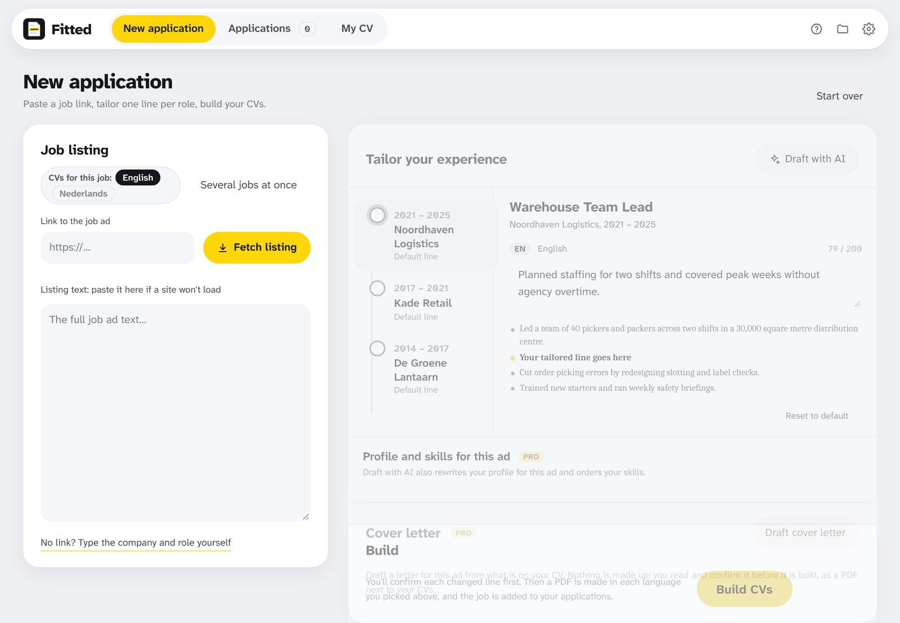
Step 1: Job listing
- Paste the link to the job ad and click Fetch listing. Fitted fills in the company, the role and the apply link. Check them.
- A site won't load? Open Listing text, and paste the ad text you copied from your browser.
- No link at all? Click No link? Type the company and role yourself. Until there's a job, the page shows only the link box, so you're never asked for things you don't have yet.
- At the top right, CVs for this job shows your languages. You get one CV: your base language, or the ad's language once the ad is loaded (a German ad gives only a German CV). Click another language to add it for this job.
- Applying through an agency? Tick Via a recruiter under Company, fill in the agency, and the employer if the ad names it. Fitted ticks it for you when the ad says "our client". Your list then shows "Holidu (via Hirewise)" or "Hirewise (recruiter)".
On Android you can also start from the ad itself: tap Share on a job ad in your browser, LinkedIn or a job app, and choose Fitted.
Several jobs at once. Applying for a lot of jobs? Click Several jobs at once and paste up to 10 job links, one per line. Fitted loads each ad and drafts your lines in the background, with a cover letter for each job too if you tick that (Pro). You then check and build them one after another: after each build, Next job in your list opens the next one.
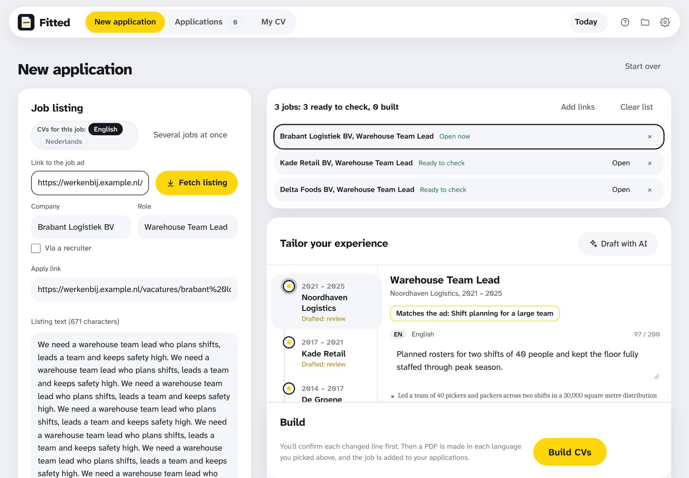
Match check (Pro). Under the job ad, Check match compares the ad's requirements with your CV before you spend time on it. Each requirement gets a tick (on your CV), a tilde (partly) or a cross (not on your CV), with the line from your CV that shows it. It never adds anything to your CV: if you do have a skill it marks as missing, add it to Extra true facts in My CV.
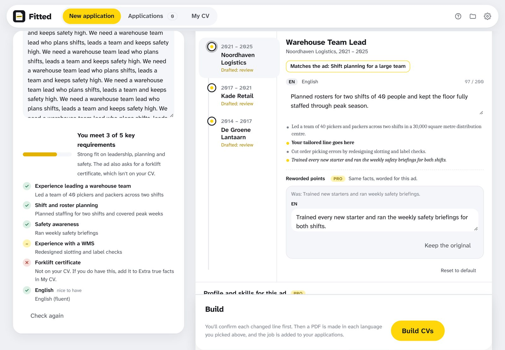
Step 2: Tailor your experience
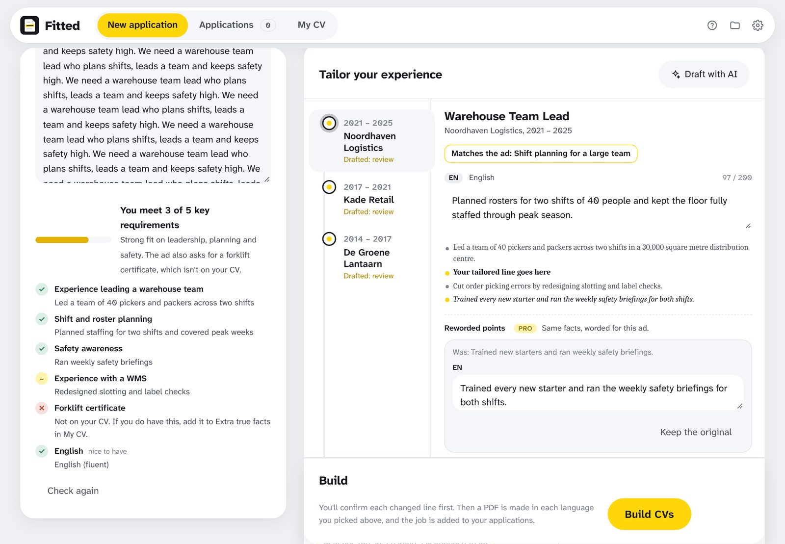
- Click Draft with AI. For each job, the AI writes one line that matches what the ad asks for, using only facts from that job and your extra facts.
- The yellow note shows which requirement in the ad the line answers.
- Click each job on the left to review its line, in every language. Change the wording freely; the line should stay true and under 200 characters.
- The list under the text box shows where the line goes: as the second point of that job. If the line already says everything one of that job's points says, Fitted leaves that point out of this CV, so nothing reads twice. A point that adds anything of its own stays.
- Reset to default puts back that job's standard line.
Dots on the left: grey = default line, amber = drafted by the AI and not yet reviewed, green = checked by you.
Fitted Pro extras (also included in the free trial)
- Reworded points: up to 2 more points per job, reworded for the ad with the same facts. They appear under the job's line; Keep the original undoes one.
- Profile and skills for this ad: under the jobs, your profile rewritten for the role and your skills with the most relevant first. Keep my own profile and Keep my order undo them.
With Fitted (not Pro) these places show a Get Pro button.
Step 3: Cover letter (Fitted Pro, optional)
- Click Draft cover letter. Your AI writes a letter for this ad in each of your languages, using only what is on your CV and your extra facts, and the lines you chose for this ad.
- Read it and change anything that isn't quite you. It greets the contact person if the ad names one.
- Don't want a letter this time? Click No cover letter.
When you build, you confirm the letter is true (next section), and it is saved as a PDF in your CV style, next to your CVs.
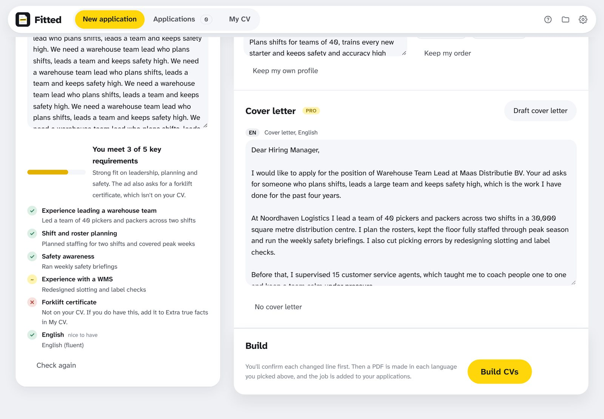
Step 4: Build
Click Build CVs. You first check everything on one review screen (next section), then Fitted makes a PDF in each language you picked and adds the job to Applications. Afterwards the button says Build again.
Start over (top right) clears the page for the next job.
5. Check and confirm
Nothing is built until you have confirmed every changed line. Recruiters ask about what's on your CV, so each line has to be something you can talk about.
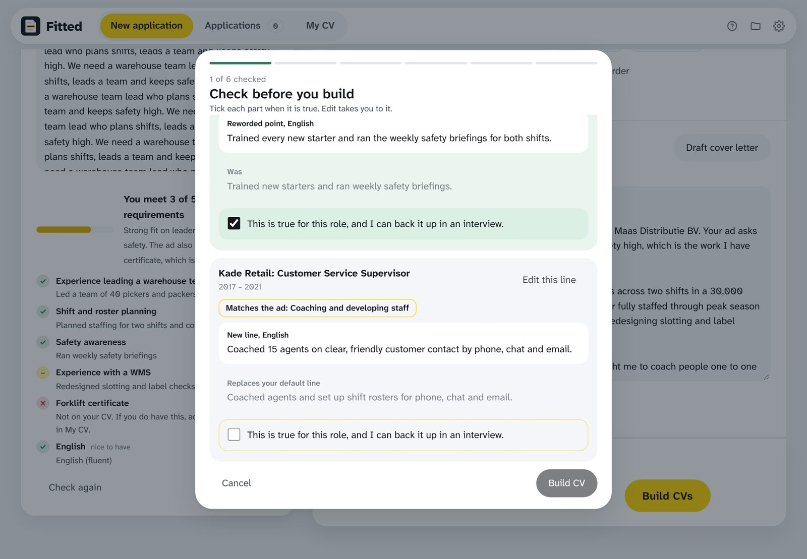
Everything to check is on one screen, each part with its own tick:
- each job with a new line: the requirement in the ad it answers (yellow), the new line, the default line it replaces, and any point that is left out because your line already says it;
- with Pro: reworded points (with the job's line), your new profile and your cover letter;
- the job details and the CV style, at the bottom.
Tick This is true for this role, and I can back it up in an interview for each part. Build CV works once everything is ticked.
- Edit this line (next to each part) takes you back to change the wording.
- Cancel stops without building anything.
The last step, Check the job details, shows the company, role, apply link, languages and which version to send. Tick that they are correct and click Build.
CV style. On that last step, choose how your CVs look:
- Classic: petrol blue, spaced headings.
- Modern: a teal header band.
- Elegant: serif type, burgundy.
- Minimal: black and grey.
- Bold: large name, amber accents.
Click Preview with my CV to open your own CV in the chosen style. Fitted remembers your choice for the next job, and Preview in My CV uses it too.
Photo. When German is one of your languages, this step reminds you that German CVs usually include a photo, with an Add photo button. If you already have a photo, it shows which CVs it goes on.
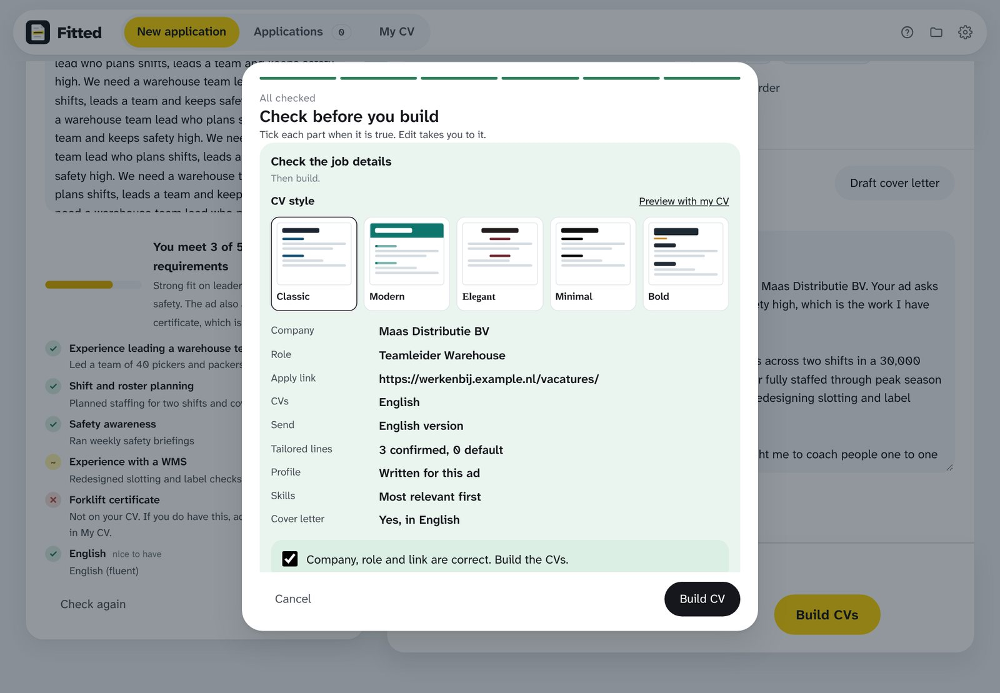
6. Your CVs are ready
After building, a green box shows your PDFs, one per language, and which one to send.
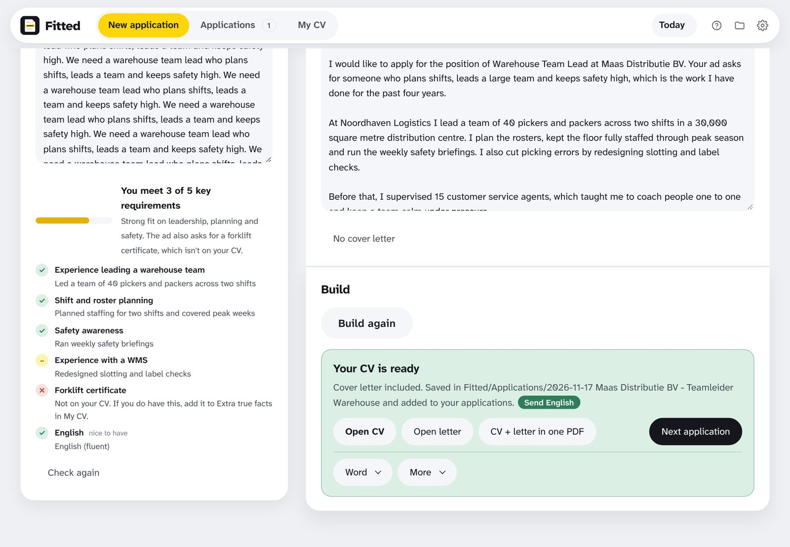
- Send ... (green label): the version that matches the ad's language. Send that one.
- Open CV, Open letter and CV + letter in one PDF: the files you send. On Android these are Share buttons, to send them by email, WhatsApp or to a job site.
- Other languages: the same files in your other languages, if you made them for this job.
- Word: the CV and letter as Word files, and the editable copies.
- More: form answers (Pro), Open folder (Windows and Mac) and See applications.
Word copies. Next to each PDF, Fitted also saves the same CV as a Word file (.docx), for job sites and recruiters that ask for Word. Open it with the Word button. It has real headings and bullet lists, so application systems read it well.
Changing a line after building. The PDFs you send are plain text. For a last tweak, click Editable copies: the same CVs, with the tailored lines still editable in a PDF reader such as Edge, Chrome or Acrobat. PDF readers highlight those editable lines, so send the normal PDF, or change the line in Fitted and build again (the same job is updated, not added twice).
7. Applications
Every job you build CVs for lands here, newest first, with its status and files. The list is also saved as applications.xlsx in your Fitted folder.
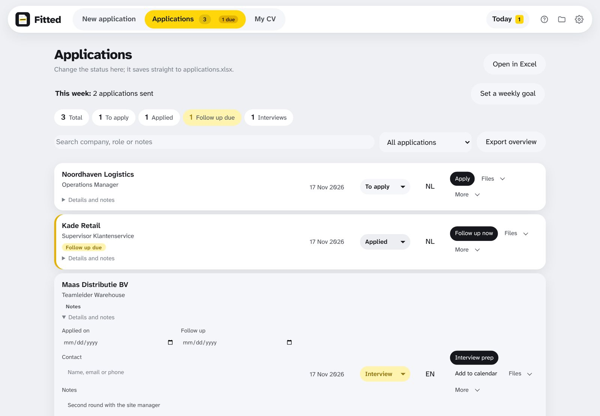
- Totals at the top: all jobs, to apply, applied, follow-ups due, interviews (and offers, once you have one). Click one to see only those jobs.
- Status: pick To apply, Applied, Interview, Offer, Rejected or Withdrawn. It saves straight away.
- Send: which language version to send.
- The next step for each job stands out: Apply while it's To apply, the Follow-up email once you've applied, Interview prep and Add to calendar for an interview.
- Files: the PDFs and Word files per language and (Windows and Mac) the job's folder; on Android, share a PDF from here.
- More: the job ad, the apply link, form answers and anything else for that job.
- Open in Excel (Mac: Open spreadsheet; Android: Share spreadsheet) opens or shares the whole list.
Today. The Today button in the top bar (and at the top of Applications) opens a short list that shows what needs doing now: an interview coming up, follow-ups that are due, and jobs still to apply for. Click one to go straight there. It also shows how many applications you sent this week.
Reminders (Mac and Android). Turn them on in the Today panel or in Settings → App. Every morning at 9, Fitted lets you know when a follow-up is due or an interview is today or tomorrow, also when Fitted is closed. On Android, allow notifications when asked. On Windows, the Today panel shows the same when you open Fitted.
Search and filter. Type in the search box to find a company, role or note. Click one of the totals at the top, or pick from the list next to the search box, to see only those jobs, for example only the follow-ups that are due.
Details and notes. Open Details and notes under a job to keep the date you applied, interview rounds, when to follow up, a contact person and your own notes. It saves as you type.
Follow-ups. When you mark a job as Applied, Fitted sets a reminder to follow up 7 days later. Jobs that are due get a Follow up due label, and the top bar shows how many are due. Click Follow-up email (or Follow up now) for a short, polite email in the CV's language. Change what you like, then Copy it or Open in email. Fitted never sends anything itself. Click I sent it and Fitted reminds you again later if there's no news.
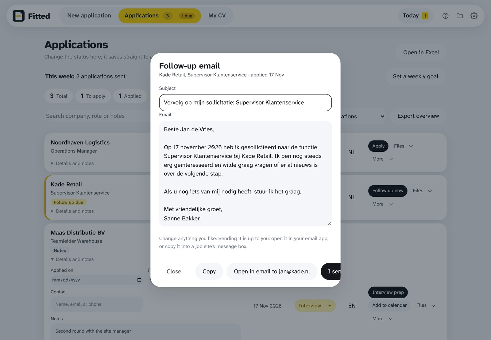
Interview prep (Pro). For jobs at Applied or Interview, Interview prep gives the questions you're likely to get for this job, why they ask them, and an outline answer built only from your own CV, plus questions you can ask them. Open the PDF to print it or read it on your phone.
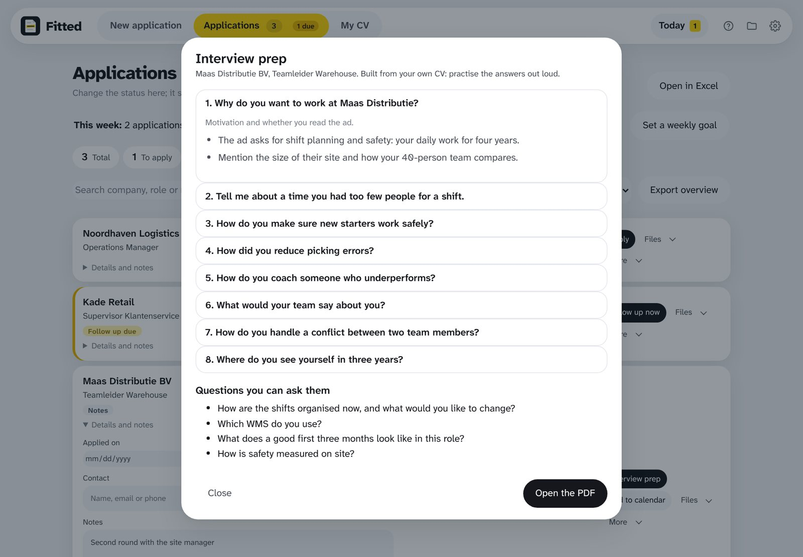
Export an overview. Export overview makes a list of the jobs you applied for between two dates, as a PDF or an Excel file. Handy for a job coach, a benefits agency or your own records. It's saved in the Reports folder.
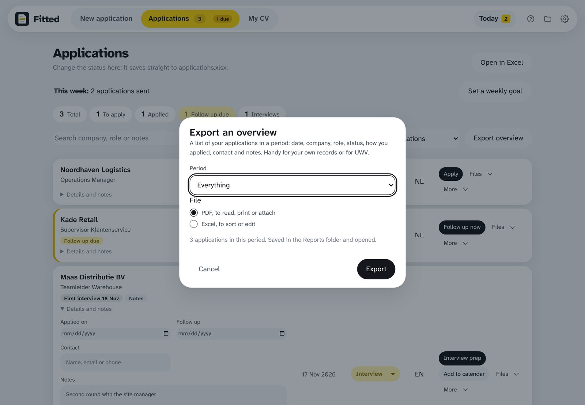
Weekly goal. Click Set a goal above the totals and enter how many applications you aim for each week, for example for UWV. A bar shows how far you are this week (Monday to Sunday). The overview export then lists your applications per week, with the goal.
Form answers (Pro). Online application forms often ask the same questions. Click Form answers on a job (or after building), tick the questions the form asks or paste its own, and pick a length. Fitted writes answers from your CV only, with a character count for forms with a limit. Questions your CV can't answer, such as salary, start date or work permit, are left for you to fill in. Copy one answer or Copy all; the answers are saved with the job.
Interview rounds. In Details and notes, + Add a round for each step: recruiter call, phone screen, first or second interview, assessment or final interview, with the date and who you meet. The next round shows on the job and in the Today panel, Interview prep focuses on that round, and Add to calendar uses it.
Write a reply (Pro). Under More, Write a reply drafts a short answer to a recruiter or company. Paste their message, pick LinkedIn, email or WhatsApp, the tone and the length. It only uses facts from your CV; check it, then copy it or open it in your email app.
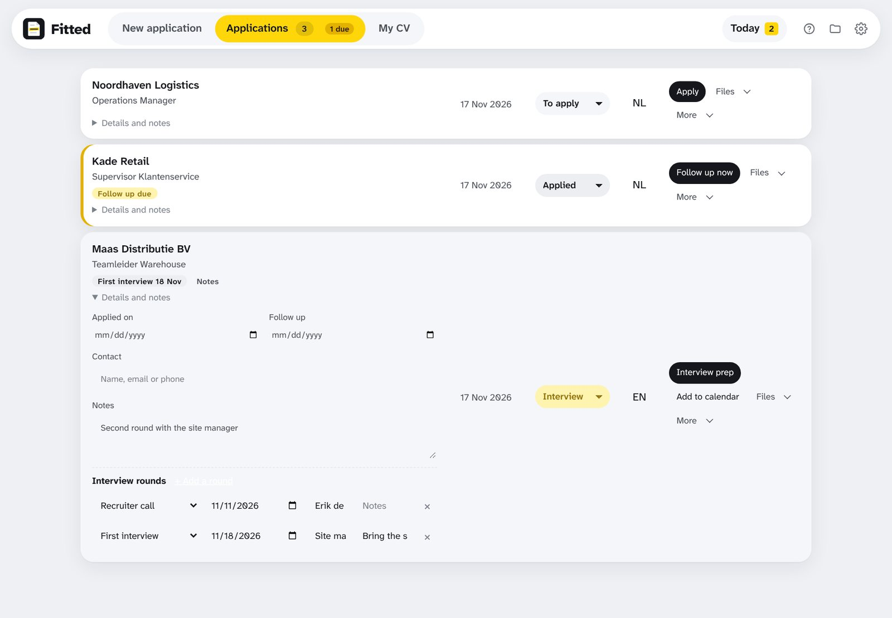
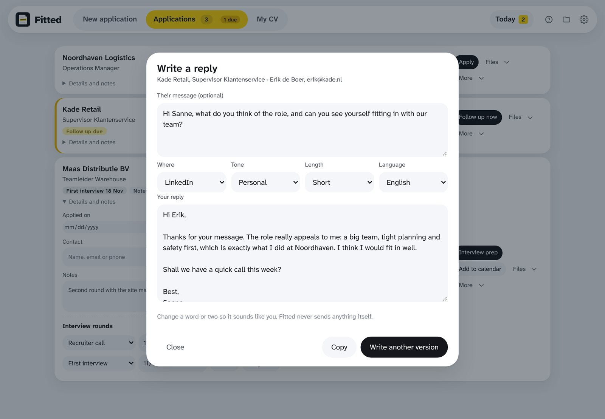
Delete an application. Under More, Delete application removes it from your list after you confirm. Its CVs, letter and notes are moved to the Deleted folder in Fitted, so you can still get them back.
Add to calendar. Once a job has an interview date, Add to calendar makes a calendar event with the company, role, contact and your interview prep, and a reminder the day before.
Where your interviews come from. Once you've sent a few applications, open Where your interviews come from above the list: per job site, how many applications you sent and how many led to an interview. Small numbers can swing, so read it as a hint.
Cover letters also come as a Word file next to the PDF (Letter in Word).
On a phone each job shows as a card.
8. My CV
My CV is the base of every CV you build. Tailored lines draw only on what's here, so keep it complete and true.
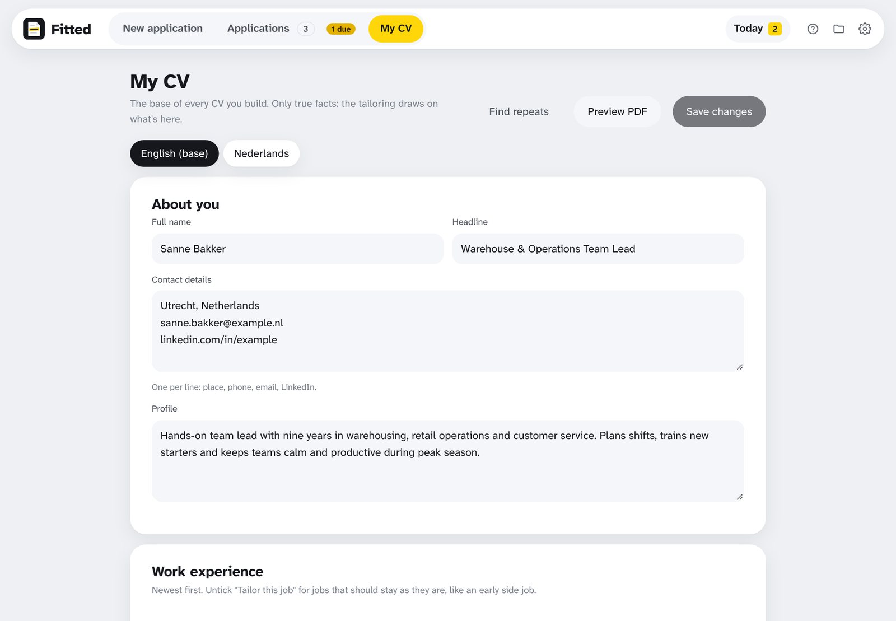
Find repeats. Click Find repeats at the top to see points in the same job that say the same thing. For each pair you choose: remove one, or keep both. Nothing changes until you choose, and you save as usual.
Language tabs. Your base language and each extra language have their own tab. When you save a change in the base version, Fitted translates just that change into your other languages straight away; phone numbers, email and links are copied as they are, and edits you made in another language stay. If that can't happen (no AI connected, or its limit is reached), the language gets an amber dot and an Update translation button. Each language tab also has Translate again from ... for a translation that no longer matches. Translations can also be edited by hand.
Sections
- About you: name, headline, contact details (one per line), profile.
- Work experience: one card per job, newest first. Fill in job title, company, dates and what you did (one point per line).
- Tailor this job: untick it for jobs that should stay as they are, such as a student job. Those never get a tailored line.
- Default tailored line: the second point of that job when you don't tailor for an ad. A true fact, under 200 characters.
- The arrows move a job up or down; Remove deletes it.
- Key achievements, Skills, Languages, Certifications, Education, References.
- Extra true facts: things that are true but not written on your CV. The AI may use them when tailoring lines, and nothing else. One per line, and be specific about what you did and didn't do.
- Headings: rename section headings per language if you like.
Buttons
- Preview PDF: shows the CV as it will look.
- Save changes: lights up once you change something. Leaving My CV with unsaved changes asks whether to save.
- Replace with a new CV file: imports a new CV (section 2). Your current CV is kept as a backup in the Fitted folder.
9. Help, updates and your licence
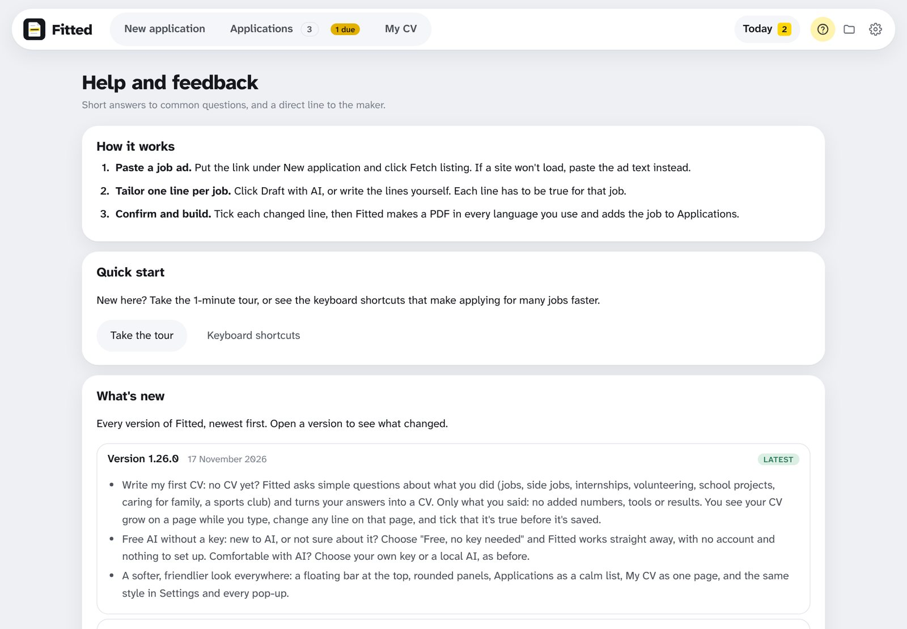
Help and feedback. Short answers to common questions, and a form that goes straight to help@getfitted.nl. Choose Problem, Idea or Question, write a few words and click Open in email (or Copy instead). Leave Add app version and system version ticked: it helps fix problems faster.
Updates. Fitted checks for a new version when it starts. A banner appears: click Update and restart (Android: Update). Your CV, settings and applications are never touched. On a Mac, keep Fitted in your Applications folder so it can update itself. On Android, allow Fitted to install updates the first time it asks.
Free trial and licence
- Fitted is free for your first 3 jobs. Building again for a job you already did doesn't count.
- After that, buy Fitted (€15: one tailored line per job) or Fitted Pro (€25: up to 3 lines per job, plus profile, skills and a cover letter for each ad), once, from the sidebar or Settings. Activate it with the key from your purchase email. Already have Fitted? Settings → Upgrade to Pro (€10).
- One licence works on 2 devices, in any mix of computers and phones.
- Everything you made during the trial stays yours.
- Not happy? Within 14 days you get your money back: email help@getfitted.nl with your order number.
10. Troubleshooting
| Problem | What to do |
|---|---|
| A job site won't load the listing | Some sites need a login or block apps. Copy the ad text in your browser and paste it under Listing text. |
| "Set up an AI first" | Open Settings → AI, paste a key and click Connect. |
| The AI gives an error or limit message | Free plans have limits per minute or day. Wait a moment, or pick another AI in Settings. |
| CV import says hardly any text could be read | The file is probably a scanned image. Use a PDF with real text, a Word file, or start from scratch. |
| "A file is open in another program" | Close applications.xlsx in Excel, or the PDF, and try again. |
| Windows says "Windows protected your PC" | Click More info, then Run anyway. Only the first time. |
| Mac says Fitted can't be opened | System Settings → Privacy & Security → Open Anyway. Only the first time. |
| Android won't install the file | Allow installs from your browser (or, for updates, from Fitted) when Android asks. |
| Mac update says to move Fitted | Drag Fitted into your Applications folder, open it from there and update again. |
| Something else | Help and feedback → Send feedback, or email help@getfitted.nl. |
Source for the interview figure: Huntr, Job Search Trends Q2 2026. The figure shows that tailored CVs and more interviews go together; it doesn't prove that tailoring causes them, and nobody can promise you interviews.
Fitted CV gebruikershandleiding
Fitted CV maakt in een paar minuten een cv dat past bij elke vacature. De regels die recruiters het eerst lezen, worden afgestemd op de vacature, alleen met wat je echt gedaan hebt. Je krijgt een verzendklare pdf in elk van je talen. Fitted CV is het eerste product van FITTED.
Waarom je cv per vacature aanpassen? Recruiters scannen eerst functietitels, werkgevers en trefwoorden, in een paar seconden. In een onderzoek naar bijna 2 miljoen sollicitaties kregen afgestemde cv's 1,85 keer zoveel uitnodigingen voor een gesprek (Huntr, 2026). Fitted CV maakt dat afstemmen snel, en houdt het eerlijk.
Je eerste passende cv in vijf stappen
- Haal je cv binnen. Importeer je cv als pdf of Word, of je LinkedIn- of Indeed-profiel opgeslagen als pdf (hoofdstuk 2).
- Koppel een AI. Een gratis AI is prima (hoofdstuk 3).
- Plak de link naar de vacature. Fitted haalt de vacature, het bedrijf en de functie op (hoofdstuk 4).
- Laat de AI een voorstel doen en controleer elke regel. Niets komt op je cv tot jij bevestigt dat het klopt (hoofdstuk 5).
- Kies een stijl en maak je cv's. Je krijgt per taal een pdf, en een regel in je sollicitatieoverzicht (hoofdstuk 5 en 6).
De rest van deze handleiding loopt alle pagina's van de app langs in de volgorde waarin je ze tegenkomt. Staat je computer of telefoon in het Nederlands, dan is Fitted dat ook (wijzigen kan bij Instellingen → Taal van Fitted).
1. Aan de slag
Download Fitted via getfitted.nl. Je eerste 3 vacatures zijn gratis.
| Apparaat | Wat je downloadt | Eerste keer openen |
|---|---|---|
| Windows 10 of 11 | Fitted CV in de Microsoft Store | Klik op Downloaden. Fitted CV staat daarna in het Startmenu, en de Store houdt het bij. |
| Mac met Apple silicon (M1 of nieuwer) | Fitted-mac-apple-silicon.dmg | Open het bestand en sleep Fitted naar Apps (Programma's). Zegt macOS dat het Fitted niet kan controleren: Systeeminstellingen → Privacy en beveiliging → Toch openen. |
| Mac met Intel | Fitted-mac-intel.dmg | Zoals hierboven. |
| Android 7 of nieuwer | Fitted-android.apk | Tik op het gedownloade bestand. Android vraagt één keer of je installaties via je browser toestaat: zet Toestaan van deze bron aan en ga terug. |
Deze meldingen zie je alleen de eerste keer. Updates installeer je vanuit Fitted, zonder meldingen.
Voor regels schrijven, vertalen en je cv importeren heb je een AI-account nodig. Een aantal AI's heeft een gratis optie; Fitted helpt je er op de volgende pagina een in te stellen.
Waar je bestanden staan
- Windows en Mac: een map Fitted op je bureaublad, met je cv, instellingen, het sollicitatieoverzicht (applications.xlsx) en een map Applications met per vacature een map, genoemd naar datum, bedrijf en functie (bijvoorbeeld "2026-11-03 Acme - Teamleider"), met de pdf's klaar om te versturen. "About this folder.txt" legt uit wat waar staat.
- Android: in de app Fitted. Met Delen stuur je een pdf waarheen je wilt.
2. Je cv instellen
Dit doe je één keer. Fitted zet je bestaande cv om naar een eigen, bewerkbare versie, zonder iets toe te voegen wat er niet in staat. Je cv blijft in zijn eigen taal, en die taal wordt je basis-cv.
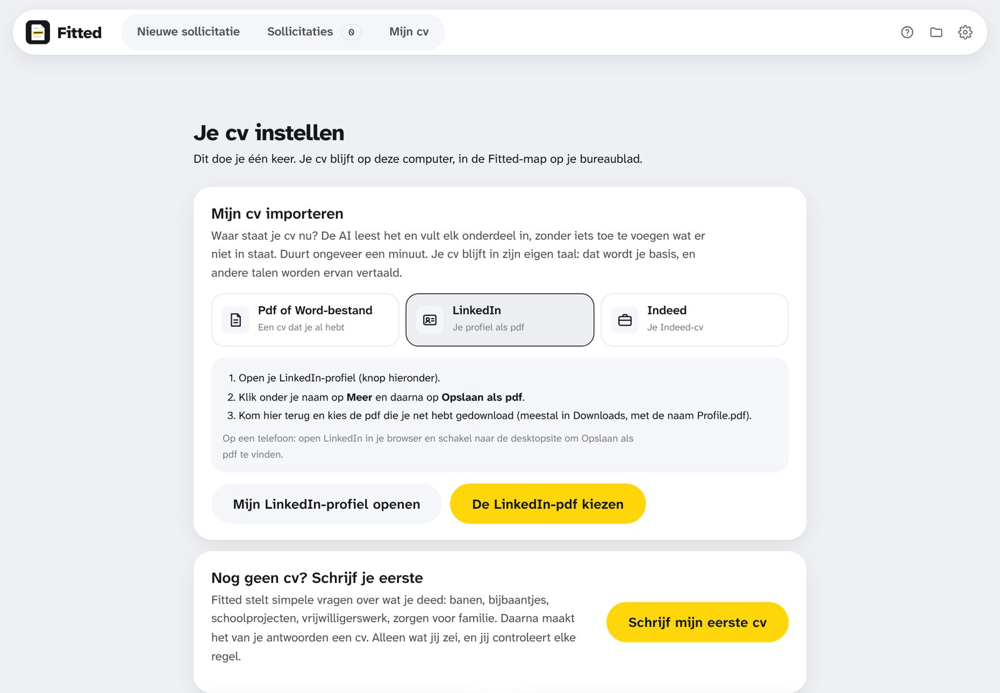
Waar staat je cv nu? Kies een van de drie bronnen:
| Bron | Wat je doet |
|---|---|
| PDF or Word file (pdf- of Word-bestand) | Klik op Cv-bestand kiezen en kies je cv (.pdf of .docx). |
| Klik op Mijn LinkedIn-profiel openen, dan onder je naam op Meer → Opslaan als pdf. Kom terug en klik op De LinkedIn-pdf kiezen (meestal Profile.pdf in Downloads). Op een telefoon: gebruik de desktopversie van de LinkedIn-site. | |
| Indeed | Klik op Mijn Indeed-profiel openen, open het menu ⋮ bij je cv en kies Downloaden. Kom terug en klik op De Indeed-pdf kiezen. |
LinkedIn en Indeed laten andere apps je profiel niet rechtstreeks lezen; daarom gaat het via de pdf.
AI die je cv leest. Is er nog geen AI ingesteld, dan vraagt het vak boven de knop erom. Kies een aanbieder, klik op Sleutel aanvragen, plak de sleutel en klik op Verbinden. In hoofdstuk 3 lees je welke AI je kiest.
Het importeren duurt ongeveer een minuut. Daarna opent Fitted Mijn cv, zodat je elk onderdeel kunt nalopen en op Wijzigingen opslaan klikt.
Andere manieren om te beginnen
- Schrijf mijn eerste cv: nog geen cv? Zie hieronder.
- Helemaal opnieuw beginnen: kies de taal en typ je cv zelf in de editor.
- Een Fitted-gegevensbestand openen: open een cv-data.json van een eerdere installatie of een back-up.
Schrijf mijn eerste cv
Nog nooit een cv gemaakt, of een tijd niet gewerkt? Klik op Schrijf mijn eerste cv. Fitted stelt simpele vragen, in vijf korte stappen:
- Over jou: je naam, hoe werkgevers je bereiken en wat voor werk je zoekt.
- Wat je deed: alles telt, niet alleen banen. Kies wat het was (baan, bijbaan, stage, vrijwilligerswerk, schoolproject, zorg voor familie, sport of club) en beantwoord twee vragen: wat deed je op een gewone dag? en wat ging er goed, of waar ben je trots op?
- School: je school, studie of cursussen.
- Vaardigheden: waar je goed in bent en welke talen je spreekt.
- Je cv: klik op Schrijf mijn cv. Fitted maakt van je antwoorden cv-regels, alleen met wat jij schreef. Of klik op Gebruik mijn eigen woorden zoals ze zijn.
Terwijl je typt, groeit je cv op de pagina naast de vragen. Na het schrijven klik je op een regel op die pagina om hem aan te passen. Vink Alles op dit cv klopt aan en klik op Opslaan als mijn cv: het wordt je basis-cv, klaar om af te stemmen op vacatures.
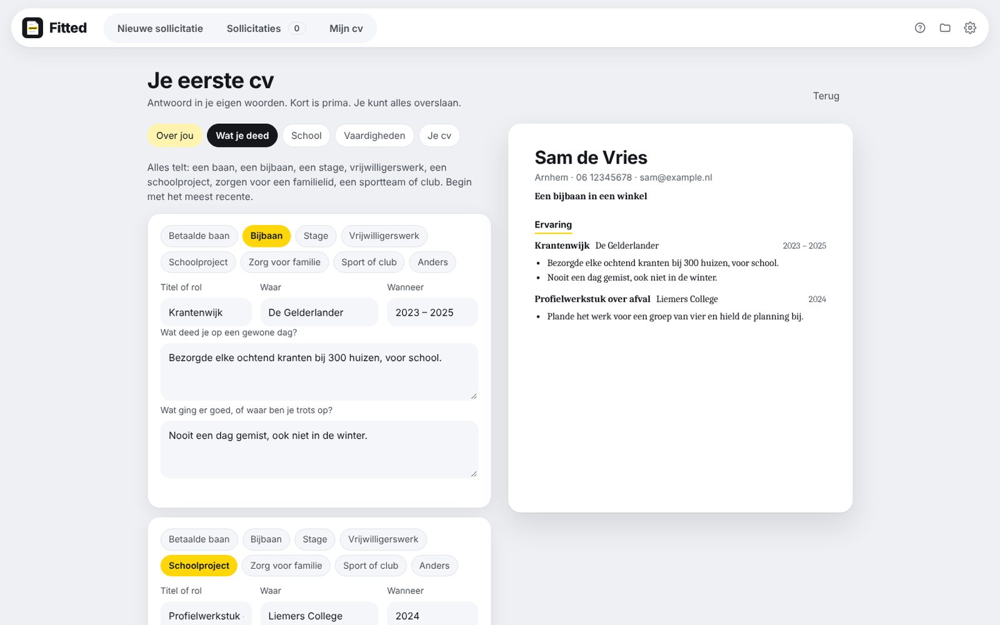
3. Instellingen: AI, talen, licentie
Open Instellingen met het tandwiel rechtsboven (op een telefoon: het tabblad Instellingen). Je AI-sleutel blijft op je eigen apparaat.
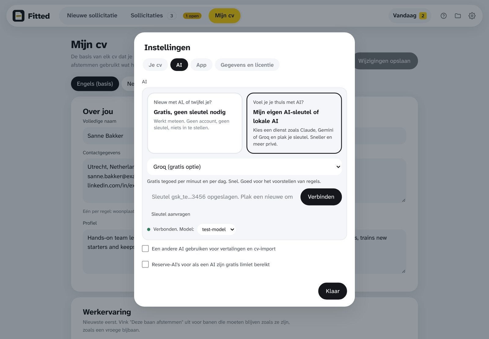
Nieuw met AI? Kies de gratis versie. Instellingen begint met één vraag. Nieuw met AI, of twijfel je? Kies Gratis, geen sleutel nodig en klik op Verbinden: Fitted gebruikt gratis openbare AI-diensten, zonder account en zonder iets in te stellen. Je cv-tekst en vacatures gaan naar die diensten, en gratis diensten kunnen op drukke momenten traag zijn. Voel je je thuis met AI? Kies Mijn eigen AI-sleutel of lokale AI voor een snellere en meer privé opzet.
Je eigen AI kiezen. Met je eigen account betaal je de AI-aanbieder rechtstreeks, of niets met een gratis abonnement.
| AI | Kosten | Goed om te weten |
|---|---|---|
| Claude (Anthropic) | Betalen per gebruik | Het betrouwbaarst voor vertalen en cv importeren. |
| Google Gemini | Gratis abonnement | Met het gratis abonnement mag Google wat je stuurt gebruiken om zijn producten te verbeteren; Fitted toont een waarschuwing. |
| Groq | Gratis tegoed | Snel; goed voor regels schrijven. |
| OpenRouter | Gratis modellen | Eén sleutel voor veel AI-modellen. |
| Local AI (Ollama) | Gratis | Draait op je eigen computer, er gaat niets naar buiten. Installeer eerst Ollama en download een model. |
| Andere vergelijkbare dienst | Verschilt | Voor diensten die werken zoals die van OpenAI. |
Kies er een, klik op Sleutel aanvragen, plak de sleutel en klik op Verbinden. Fitted test de sleutel en kiest een geschikt model; dat kun je daarna nog wijzigen.
Een andere AI gebruiken voor vertalingen en cv-import. Vink dit aan om een sterkere AI te gebruiken voor het zware werk (je hele cv vertalen en importeren) en een goedkopere of gratis AI voor het schrijven van regels.
Reserve-AI's. Vink Reserve-AI's voor als een AI zijn gratis limiet bereikt aan en voeg tot twee extra AI's toe, zoals Groq en Google Gemini (allebei gratis). Zit je AI aan zijn limiet of is hij erg druk, dan schakelt Fitted vanzelf over naar de volgende en laat zien welke het werk deed. Heb je nog geen reserve en bereik je een limiet, dan staat in de melding een knop Gratis reserve-AI toevoegen die je er meteen heen brengt.
Cv-talen. Klik op Wijzigen om de talen te kiezen waarin je solliciteert: Engels, Nederlands, Duits, Frans, Spaans, Italiaans, Portugees, Zweeds, Deens en Noors. Je AI vertaalt je cv één keer in elke nieuwe taal; onder My CV controleer en bewerk je elke vertaling.
Basis-cv. Je basis-cv is in de taal waarin je hem importeerde of schreef: een Duitse cv blijft Duits. De basis bewerk je onder My CV, de andere talen worden ervan vertaald. Wil je een andere taal als basis, kies hem dan hier (die vertaling moet bijgewerkt zijn). De basistaal kun je niet verwijderen.
Cv-foto. Klik op Foto toevoegen en kies een JPG of PNG. Fitted zet hem rechtop, snijdt hem bij tot een portretfoto en toont een kleine voorvertoning. Vink onder Tonen op de talen aan waarvan de cv de foto toont; Duits staat standaard aan. De foto staat rechtsboven, in elke cv-stijl. Een foto is gebruikelijk in Duitsland, Oostenrijk en Zwitserland; laat hem weg in Nederland, het Verenigd Koninkrijk en de VS. Met Foto wijzigen en Verwijderen vervang of verwijder je hem.
Taal van Fitted. Fitted volgt de taal van je computer of telefoon: Nederlands als die in het Nederlands staat, anders Engels. Kies Automatisch, Engels of Nederlands om het te wijzigen. Dit gaat alleen over de schermen van de app; je cv-talen stel je apart in.
Naar een ander apparaat. Back-upbestand maken zet je cv, foto, sollicitaties en elke vacaturemap in één .zip. Kies op de nieuwe computer of telefoon Back-up binnenhalen (ook op het allereerste scherm). Wat er op dat apparaat stond, wordt eerst bewaard in de map Backups. AI-sleutels en je licentie blijven op het apparaat waar ze horen, dus stel je AI op het nieuwe apparaat opnieuw in.
Sneller werken. De vacature laden zodra je een link plakt, direct daarna voorstellen maken, sneltoetsen en (Windows en Mac) Aanbieden een gekopieerde vacaturelink te laden: kopieer ergens een vacaturelink, ga terug naar Fitted en het biedt aan de vacature te laden of aan je lijst toe te voegen. Fitted kijkt alleen naar links en bewaart niets. De startgids tonen als Fitted opstart zet de startgids aan of uit; met De startgids openen en De rondleiding opnieuw tonen open je ze wanneer je wilt.
Licentie. Toont hoeveel gratis vacatures je nog hebt. Na je aankoop plak je hier je licentiesleutel en klik je op Activeren. Eén licentie werkt op 2 apparaten; met Deactiveren op deze computer verhuis je hem.
Versie. Toont je versie en laat je op updates controleren.
4. Nieuwe sollicitatie
Hier stem je je cv af op één vacature, in vier stappen op één pagina.
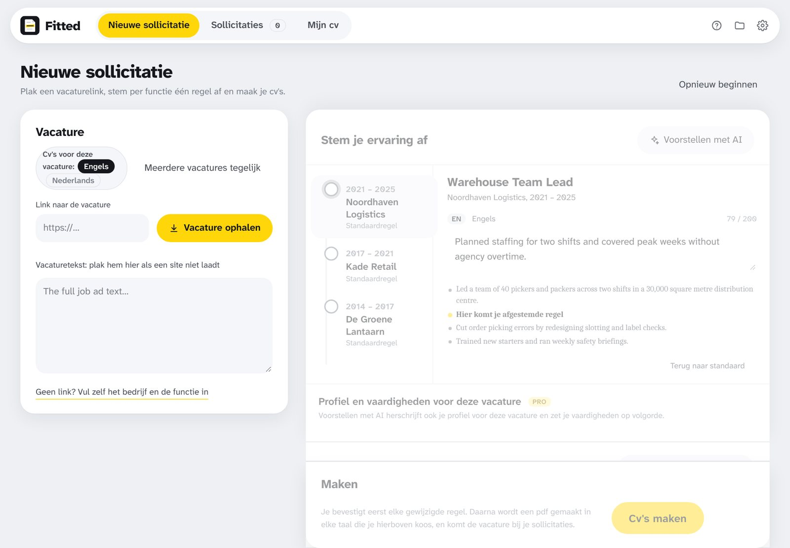
Stap 1: Vacature
- Plak de link naar de vacature en klik op Vacature ophalen. Fitted vult het bedrijf, de functie en de sollicitatielink in. Controleer ze.
- Laadt een site niet? Open Vacaturetekst en plak de tekst van de vacature die je in je browser kopieerde.
- Helemaal geen link? Klik op Geen link? Vul zelf het bedrijf en de functie in. Zolang er geen vacature is, toont de pagina alleen het linkvak, zodat je nooit iets wordt gevraagd wat je nog niet hebt.
- Rechtsboven toont Cv's voor deze vacature je talen. Je krijgt één cv: in je basistaal, of in de taal van de vacature zodra die geladen is (een Duitse vacature geeft alleen een Duits cv). Klik op een andere taal om die voor deze vacature toe te voegen.
- Solliciteer je via een bureau? Vink onder Bedrijf Via een recruiter aan, vul het bureau in, en de werkgever als de vacature die noemt. Fitted vinkt het zelf aan als de vacature "onze opdrachtgever" zegt. In je overzicht staat dan "Holidu (via Hirewise)" of "Hirewise (recruiter)".
Op Android kun je ook vanuit de vacature zelf beginnen: tik op Delen bij een vacature in je browser, LinkedIn of een vacature-app en kies Fitted.
Meerdere vacatures tegelijk. Solliciteer je op veel banen? Klik op Meerdere vacatures tegelijk en plak tot 10 vacaturelinks, één per regel. Fitted laadt elke vacature en stelt op de achtergrond je regels voor, en ook een sollicitatiebrief per baan als je dat aanvinkt (Pro). Daarna controleer en maak je ze een voor een: na elke keer opent Volgende vacature uit je lijst de volgende.
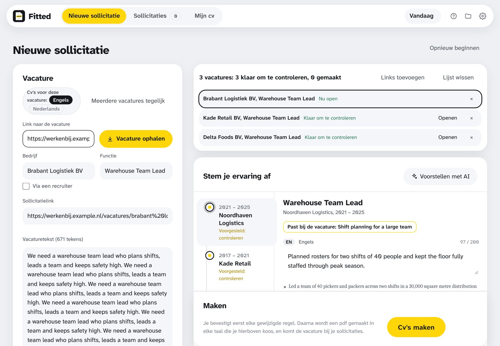
Match controleren (Pro). Onder de vacature vergelijkt Match controleren de eisen uit de vacature met je cv, voordat je er tijd in steekt. Elke eis krijgt een vinkje (staat op je cv), een tilde (deels) of een kruisje (staat niet op je cv), met de regel uit je cv die het laat zien. Er wordt nooit iets aan je cv toegevoegd: heb je een vaardigheid die als ontbrekend staat wel, zet hem dan bij Extra ware feiten in My CV.
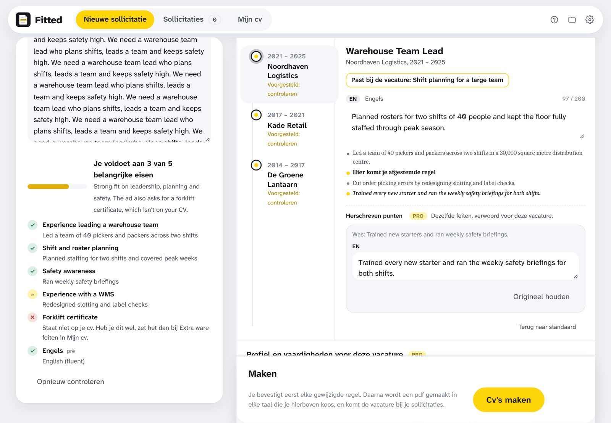
Stap 2: Stem je ervaring af
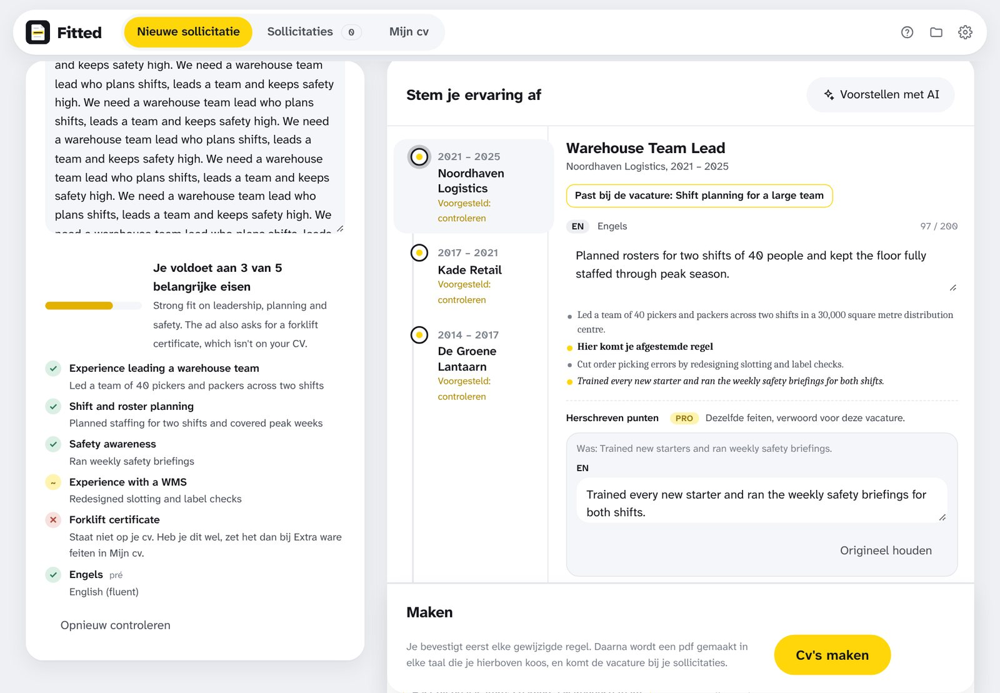
- Klik op Voorstellen met AI. Per baan schrijft de AI één regel die past bij wat de vacature vraagt, alleen met feiten uit die baan en je extra feiten.
- De gele notitie laat zien op welke eis uit de vacature de regel ingaat.
- Klik links op elke baan om de regel na te lopen, in elke taal. Pas de woorden gerust aan; de regel moet waar blijven en onder de 200 tekens.
- Het lijstje onder het tekstvak laat zien waar de regel komt: als tweede punt bij die baan. Zegt de regel al alles wat een van de punten bij die baan zegt, dan laat Fitted dat punt weg uit dit cv, zodat niets er twee keer staat. Een punt dat iets eigens toevoegt, blijft staan.
- Terug naar standaard zet de standaardregel van die baan terug.
Stippen links: grijs = standaardregel, oranje = voorgesteld door de AI en nog niet nagelopen, groen = door jou gecontroleerd.
Extra's van Fitted Pro (ook in de gratis proefperiode)
- Herschreven punten (herschreven punten): tot 2 extra punten per baan, herschreven voor de vacature met dezelfde feiten. Ze staan onder de regel van die baan; met Origineel houden zet je er een terug.
- Profiel en vaardigheden voor deze vacature: onder de banen je profiel herschreven voor de functie, en je vaardigheden met de belangrijkste eerst. Mijn eigen profiel houden en Mijn volgorde houden maken dat ongedaan.
Met Fitted (zonder Pro) staat op die plekken een knop Pro nemen.
Stap 3: Sollicitatiebrief (Fitted Pro, optioneel)
- Klik op Sollicitatiebrief voorstellen. Je AI schrijft een brief voor deze vacature in elk van je talen, alleen met wat op je cv en in je extra feiten staat, en met de regels die je voor deze vacature koos.
- Lees hem en pas aan wat niet bij je past. Noemt de vacature een contactpersoon, dan spreekt de brief die persoon aan.
- Deze keer geen brief? Klik op Geen sollicitatiebrief.
Bij het maken bevestig je dat de brief klopt (volgend hoofdstuk), en hij wordt als pdf in je cv-stijl naast je cv's bewaard.
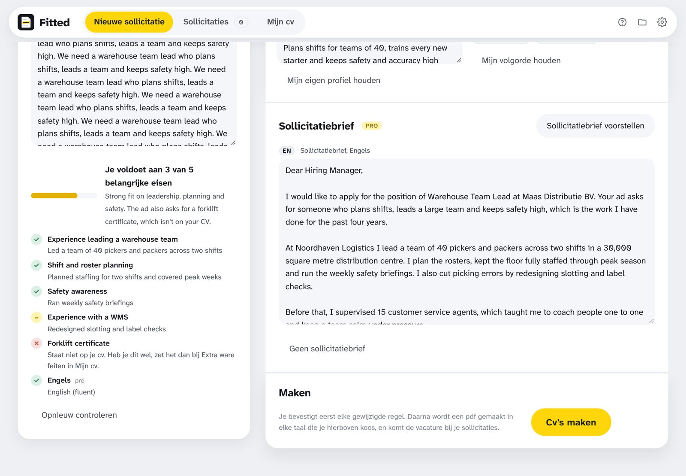
Stap 4: Maken
Klik op Cv's maken. Eerst controleer je alles op één scherm (volgend hoofdstuk), daarna maakt Fitted een pdf in elke taal die je koos en zet de vacature bij Sollicitaties. Daarna heet de knop Opnieuw maken.
Opnieuw beginnen (rechtsboven) maakt de pagina leeg voor de volgende vacature.
5. Controleren en bevestigen
Er wordt niets gemaakt voordat je elke aangepaste regel hebt bevestigd. Recruiters vragen naar wat er op je cv staat, dus elke regel moet iets zijn waar je over kunt vertellen.
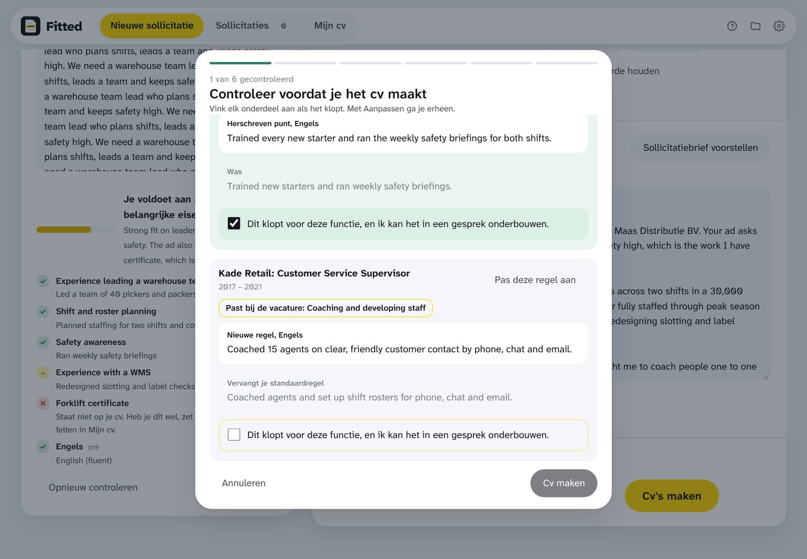
Alles wat je moet controleren staat op één scherm, elk onderdeel met een eigen vinkje:
- elke baan met een nieuwe regel: de eis uit de vacature waar hij op ingaat (geel), de nieuwe regel, de standaardregel die hij vervangt, en een punt dat wegvalt omdat je regel het al zegt;
- met Pro: herschreven punten (bij de regel van die baan), je nieuwe profiel en je motivatiebrief;
- onderaan de vacaturegegevens en de cv-stijl.
Vink bij elk onderdeel Dit klopt voor deze functie en ik kan het in een gesprek onderbouwen aan. Cv maken werkt zodra alles is aangevinkt.
- Pas deze regel aan (naast elk onderdeel) brengt je terug om de woorden aan te passen.
- Annuleren stopt zonder iets te maken.
De laatste stap, Controleer de vacaturegegevens, toont bedrijf, functie, sollicitatielink, talen en welke versie je verstuurt. Vink aan dat het klopt en klik op Maken.
CV-stijl. Kies in die laatste stap hoe je cv's eruitzien:
- Klassiek: petrolblauw, kopjes met ruimte tussen de letters.
- Modern: een groenblauwe kopbalk.
- Elegant: schreefletter, bordeauxrood.
- Minimaal: zwart en grijs.
- Krachtig: grote naam, amberkleurige accenten.
Klik op Voorbeeld met mijn cv om je eigen cv in die stijl te openen. Fitted onthoudt je keuze voor de volgende vacature, en Voorbeeld in My CV gebruikt hem ook.
Foto. Staat Duits tussen je talen, dan herinnert deze stap je eraan dat een Duitse cv meestal een foto heeft, met een knop Foto toevoegen. Heb je al een foto, dan zie je op welke cv's hij komt.
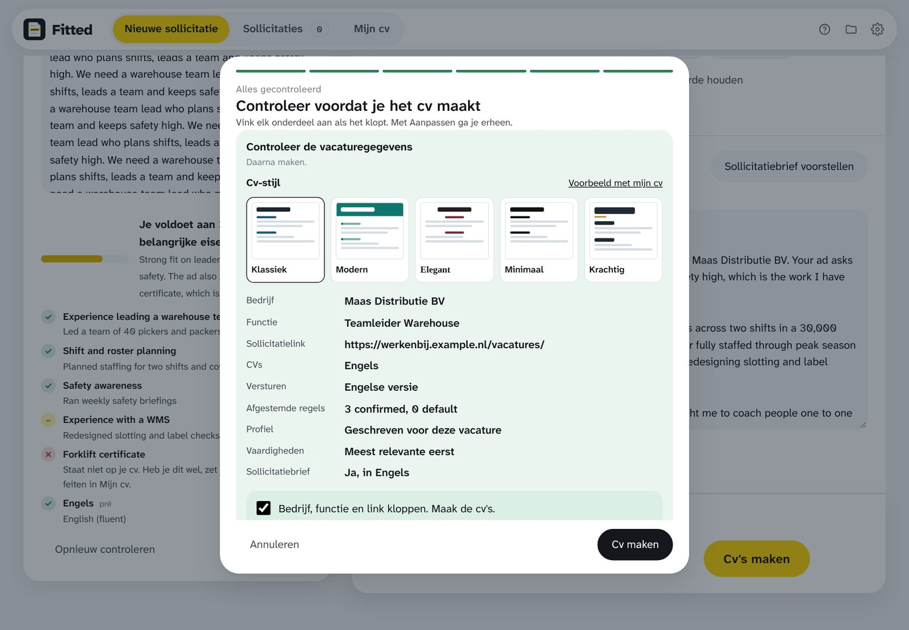
6. Je cv's zijn klaar
Na het maken toont een groen vak je pdf's, één per taal, en welke je verstuurt.
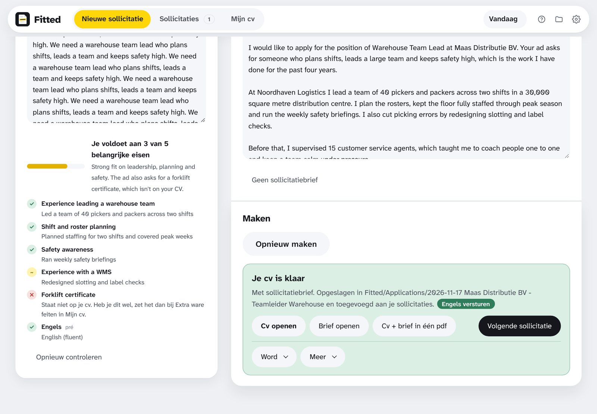
- ... versturen (groen label): de versie in de taal van de vacature. Die verstuur je.
- Cv openen, Brief openen en Cv + brief in één pdf: de bestanden die je verstuurt. Op Android zijn dit Delen-knoppen, om ze te mailen, via WhatsApp te sturen of naar een vacaturesite.
- Andere talen: dezelfde bestanden in je andere talen, als je die voor deze vacature hebt gemaakt.
- Word: het cv en de brief als Word-bestand, en de bewerkbare kopieën.
- Meer: formulierantwoorden (Pro), Map openen (Windows en Mac) en Sollicitaties bekijken.
Word-versies. Naast elke pdf bewaart Fitted hetzelfde cv ook als Word-bestand (.docx), voor vacaturesites en recruiters die om Word vragen. Open het met de knop Word. Het heeft echte kopjes en opsommingen, zodat sollicitatiesystemen het goed lezen.
Een regel aanpassen na het maken. De pdf's die je verstuurt, zijn gewone tekst. Voor een laatste wijziging klik je op Bewerkbare kopieën: dezelfde cv's, waarin de afgestemde regels nog te bewerken zijn in een pdf-lezer zoals Edge, Chrome of Acrobat. Pdf-lezers markeren die bewerkbare regels, dus verstuur de gewone pdf, of pas de regel aan in Fitted en maak de cv's opnieuw (dezelfde vacature wordt bijgewerkt, niet dubbel toegevoegd).
7. Sollicitaties
Elke vacature waarvoor je cv's maakt, komt hier, nieuwste bovenaan, met status en bestanden. Het overzicht staat ook als applications.xlsx in je map Fitted.
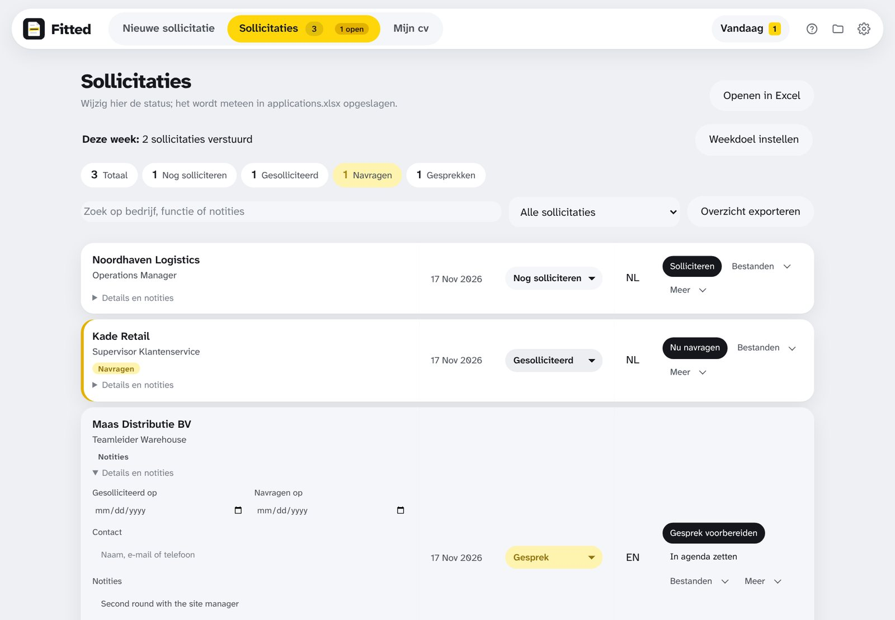
- Totalen bovenaan: alle vacatures, nog solliciteren, gesolliciteerd, navragen, gesprekken (en aanbiedingen, zodra je er een hebt). Klik erop om alleen die vacatures te zien.
- Status: kies Nog solliciteren, Gesolliciteerd, Gesprek, Aanbod, Afgewezen of Teruggetrokken. Wordt meteen opgeslagen.
- Versturen: welke taalversie je verstuurt.
- De volgende stap valt per vacature op: Solliciteren zolang hij op Nog solliciteren staat, de Navraagmail als je hebt gesolliciteerd, Gesprek voorbereiden en In agenda zetten bij een gesprek.
- Bestanden: de pdf's en Word-bestanden per taal en (Windows en Mac) de map van de vacature; op Android deel je hier een pdf.
- Meer: de vacature, de sollicitatielink, formulierantwoorden en de rest voor die vacature.
- Openen in Excel (Mac: Spreadsheet openen; Android: Spreadsheet delen) opent of deelt de hele lijst.
Vandaag. De knop Vandaag in de balk bovenaan (en bovenaan Sollicitaties) opent een kort lijstje dat laat zien wat er nu moet gebeuren: een gesprek dat eraan komt, navragen die nodig zijn en vacatures waarop je nog moet solliciteren. Klik erop om er meteen heen te gaan. Je ziet er ook hoeveel sollicitaties je deze week verstuurde.
Herinneringen (Mac en Android). Zet ze aan in het paneel Vandaag of bij Instellingen → App. Elke ochtend om 9 uur laat Fitted weten wanneer je moet navragen of vandaag of morgen een gesprek hebt, ook als Fitted dicht is. Sta op Android meldingen toe als daarom gevraagd wordt. Op Windows zie je hetzelfde in het paneel Vandaag als je Fitted opent.
Zoeken en filteren. Typ in het zoekvak om een bedrijf, functie of notitie te vinden. Klik op een van de totalen bovenaan, of kies in de lijst naast het zoekvak, om alleen die vacatures te zien, bijvoorbeeld alleen de follow-ups die nu moeten.
Details en notities. Open Details en notities onder een vacature om bij te houden wanneer je solliciteerde, gespreksrondes, wanneer je navraag doet, een contactpersoon en je eigen notities. Het wordt opgeslagen terwijl je typt.
Navragen. Zet je een vacature op Gesolliciteerd, dan zet Fitted een herinnering om 7 dagen later navraag te doen. Vacatures waarvoor dat nu moet krijgen het label Navragen, en in de balk bovenaan zie je hoeveel het er zijn. Klik op Navraagmail (of Nu navragen) voor een korte, beleefde e-mail in de taal van het cv. Pas aan wat je wilt en kies Kopiëren of Openen in e-mail. Fitted verstuurt zelf nooit iets. Klik op Verstuurd en Fitted herinnert je later opnieuw als je niets hoort.
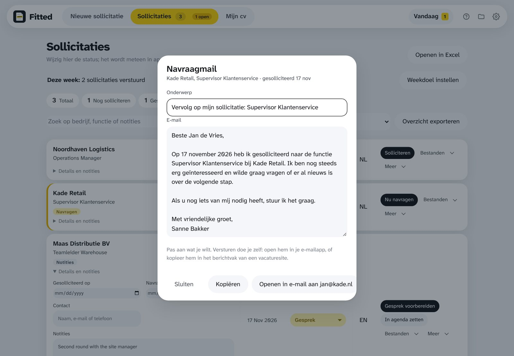
Gesprek voorbereiden (Pro). Bij vacatures op Gesolliciteerd of Gesprek geeft Gesprek voorbereiden de vragen die je voor deze baan waarschijnlijk krijgt, waarom ze die stellen, en een opzet voor je antwoord die alleen uit je eigen cv komt, plus vragen die jij kunt stellen. Met De pdf openen print je het of lees je het op je telefoon.
Gespreksrondes. Voeg in Details en notities met + Ronde toevoegen elke stap toe: gesprek met recruiter, telefonische screening, eerste of tweede gesprek, assessment of laatste gesprek, met de datum en met wie. De volgende ronde staat bij de vacature en in het Vandaag-paneel, de gespreksvoorbereiding richt zich op die ronde en In agenda zetten gebruikt hem.
Antwoord schrijven (Pro). Onder Meer maakt Antwoord schrijven een kort antwoord aan een recruiter of bedrijf. Plak hun bericht en kies LinkedIn, e-mail of WhatsApp, de toon en de lengte. Het gebruikt alleen feiten uit je cv; controleer het en kopieer het of open het in je e-mailprogramma.
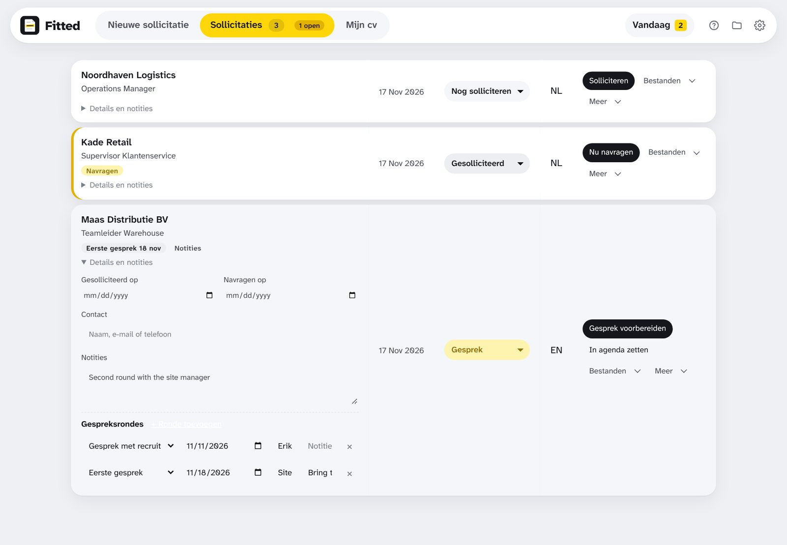
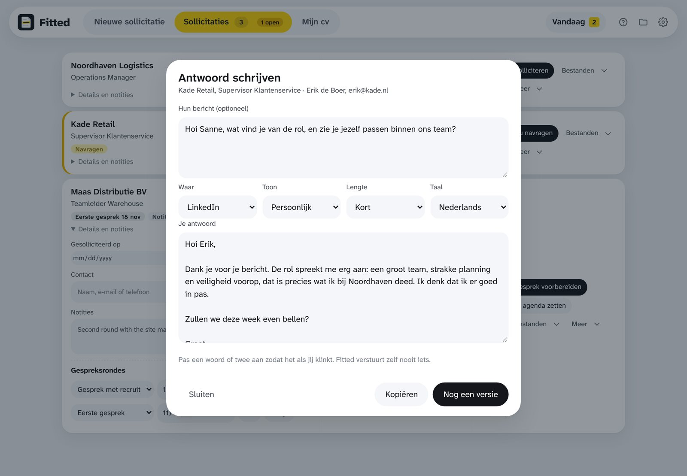
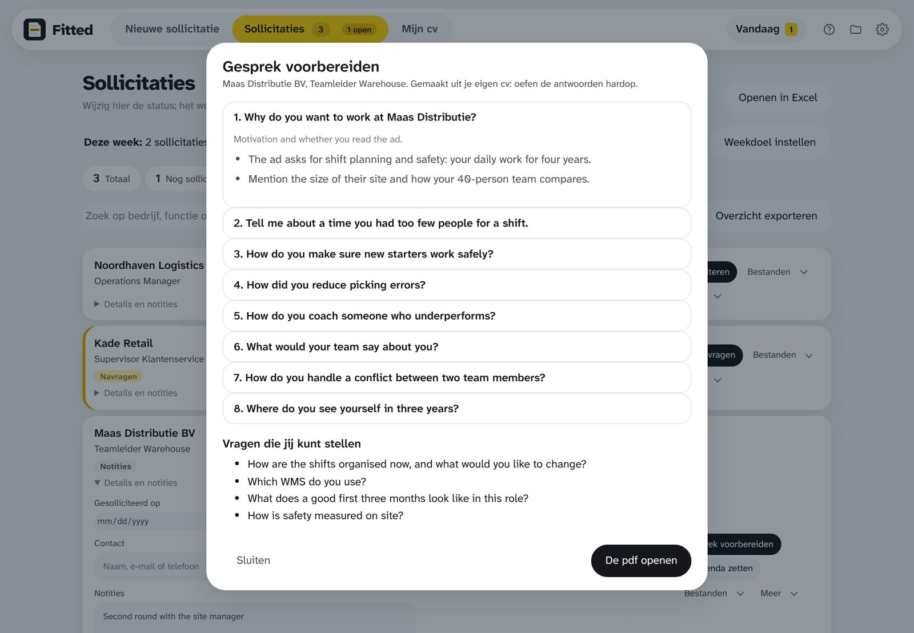
Overzicht exporteren. Overzicht exporteren maakt een lijst van de vacatures waarop je tussen twee datums solliciteerde, als pdf of Excel-bestand. Handig voor een jobcoach, het UWV of je eigen administratie. Het staat in de map Reports.
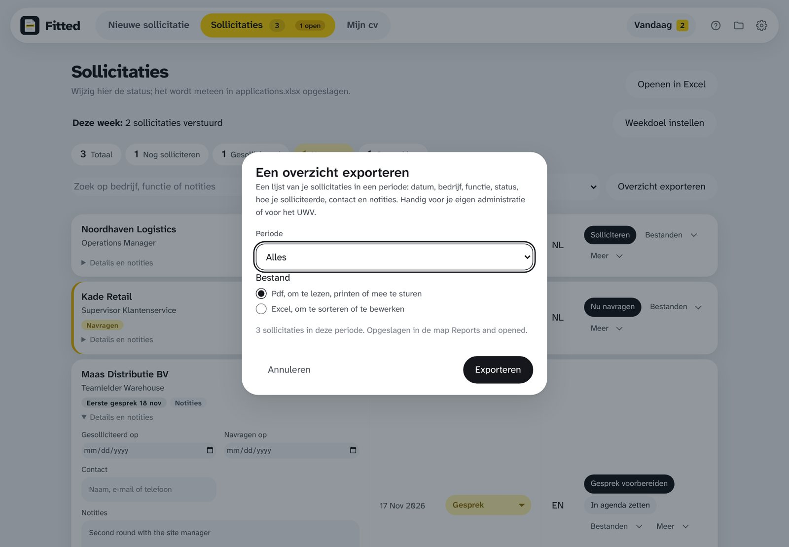
Weekdoel. Klik boven de totalen op Doel instellen en vul in op hoeveel vacatures je per week wilt solliciteren, bijvoorbeeld voor het UWV. Een balk laat zien hoe ver je deze week bent (maandag tot en met zondag). De export van het overzicht toont daarna je sollicitaties per week, met het doel.
Antwoorden voor sollicitatieformulieren (Pro). Online formulieren stellen vaak dezelfde vragen. Klik bij een vacature (of na het maken) op Formulierantwoorden, vink de vragen van het formulier aan of plak de eigen vragen, en kies een lengte. Fitted schrijft antwoorden alleen vanuit je cv, met een tekenteller voor formulieren met een maximum. Vragen die je cv niet kan beantwoorden, zoals salaris, startdatum of werkvergunning, laat Fitted voor jou open. Kopieer één antwoord met Kopiëren of alles met Alles kopiëren; de antwoorden worden bij de vacature bewaard.
Een sollicitatie verwijderen. Onder Meer haalt Sollicitatie verwijderen hem uit je overzicht, nadat je dat bevestigt. De cv's, brief en notities gaan naar de map Deleted in Fitted, dus je kunt ze nog terughalen.
In agenda zetten. Heeft een vacature een gespreksdatum, dan maakt In agenda zetten een agenda-afspraak met het bedrijf, de functie, de contactpersoon en je gespreksvoorbereiding, en een herinnering de dag ervoor.
Waar je gesprekken vandaan komen. Als je een paar sollicitaties hebt verstuurd, open je boven de lijst Waar je gesprekken vandaan komen: per vacaturesite hoeveel sollicitaties je verstuurde en hoeveel tot een gesprek leidden. Kleine aantallen kunnen schommelen, dus zie het als een hint.
Sollicitatiebrieven komen ook als Word-bestand naast de pdf (Brief in Word).
Op een telefoon staat elke vacature op een eigen kaart.
8. Mijn cv
My CV is de basis van elke cv die je maakt. Afgestemde regels gebruiken alleen wat hier staat, dus houd het compleet en waar.
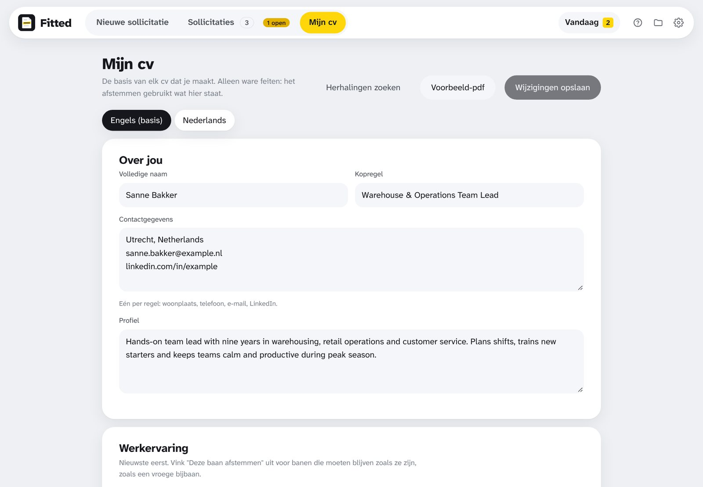
Herhalingen zoeken. Klik bovenaan op Herhalingen zoeken om punten bij dezelfde baan te zien die hetzelfde zeggen. Per paar kies je: een van de twee verwijderen, of allebei houden. Er verandert niets tot je kiest, en je slaat op zoals altijd.
Taaltabbladen. Je basistaal en elke extra taal hebben een eigen tabblad. Sla je een wijziging in de basisversie op, dan vertaalt Fitted alleen die wijziging meteen in je andere talen; telefoonnummers, e-mail en links worden gewoon overgenomen, en aanpassingen die je zelf in een andere taal deed blijven staan. Lukt dat niet (geen AI gekoppeld, of de limiet is bereikt), dan krijgt de taal een oranje stip en een knop Vertaling bijwerken. Elk taaltabblad heeft ook Opnieuw vertalen vanuit ... voor een vertaling die niet meer klopt. Vertalingen kun je ook zelf bewerken.
Onderdelen
- Over jou: naam, kopregel, contactgegevens (één per regel), profiel.
- Werkervaring: per baan een kaart, nieuwste bovenaan. Vul functie, bedrijf, periode en wat je deed in (één punt per regel).
- Deze baan afstemmen: zet dit uit voor banen die moeten blijven zoals ze zijn, zoals een bijbaan tijdens je studie. Die krijgen nooit een afgestemde regel.
- Standaard afgestemde regel: het tweede punt van die baan als je niet afstemt op een vacature. Een waar feit, onder de 200 tekens.
- Met de pijlen zet je een baan hoger of lager; Verwijderen verwijdert hem.
- Key achievements, Skills, Languages, Certifications, Education, References (resultaten, vaardigheden, talen, certificaten, opleiding, referenties).
- Extra ware feiten: dingen die waar zijn maar niet op je cv staan. De AI mag ze gebruiken bij het afstemmen, en verder niets. Eén per regel; wees precies over wat je wel en niet deed.
- Kopjes in deze taal: pas per taal de kopjes van de onderdelen aan als je wilt.
Knoppen
- Voorbeeld-pdf: laat de cv zien zoals hij wordt.
- Wijzigingen opslaan: wordt actief zodra je iets wijzigt. Verlaat je My CV met niet-opgeslagen wijzigingen, dan vraagt Fitted of je wilt opslaan.
- Vervangen door een nieuw cv-bestand: importeert een nieuwe cv (hoofdstuk 2). Je huidige cv blijft als back-up in de map Fitted.
9. Hulp, updates en je licentie
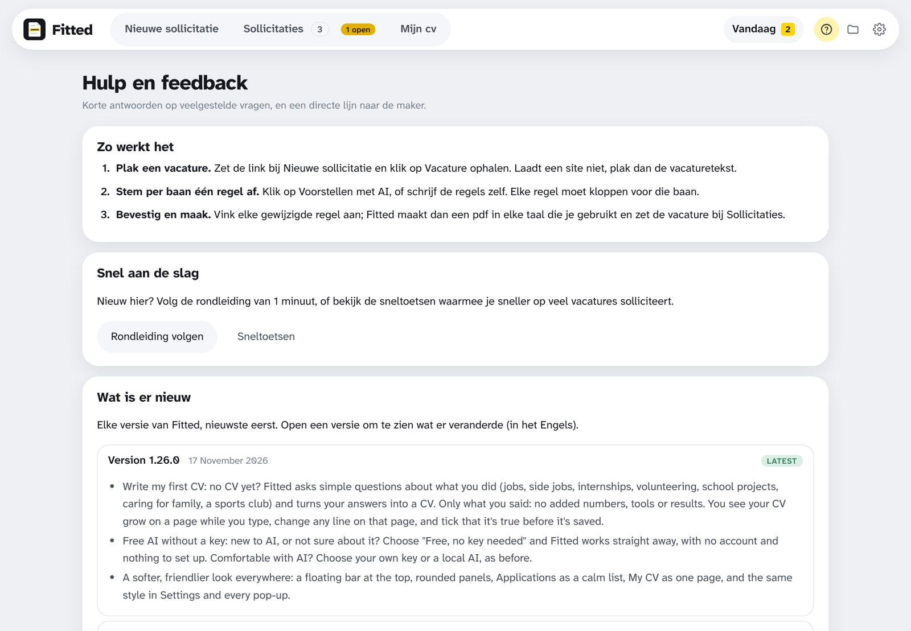
Hulp en feedback. Korte antwoorden op veelgestelde vragen, en een formulier dat rechtstreeks naar help@getfitted.nl gaat. Kies Problem, Idea of Question, schrijf een paar woorden en klik op Openen in e-mail (of Liever kopiëren). Laat App- en systeemversie toevoegen aangevinkt: zo is een probleem sneller opgelost.
Updates. Fitted kijkt bij het starten of er een nieuwe versie is. Er verschijnt een balk: klik op Bijwerken en herstarten (Android: Bijwerken). Je cv, instellingen en sollicitaties blijven onaangeroerd. Houd Fitted op een Mac in de map Apps, zodat het zichzelf kan bijwerken. Sta op Android de eerste keer toe dat Fitted updates installeert.
Gratis proberen en licentie
- Je eerste 3 vacatures zijn gratis. Opnieuw maken voor een vacature die je al deed, telt niet mee.
- Daarna koop je eenmalig Fitted (€15: één afgestemde regel per baan) of Fitted Pro (€25: tot 3 regels per baan, plus profiel, vaardigheden en een motivatiebrief per vacature), via de zijbalk of Settings. Activeer hem met de sleutel uit je aankoopmail. Heb je Fitted al? Settings → Upgrade to Pro (€10).
- Eén licentie werkt op 2 apparaten, in elke combinatie van computers en telefoons.
- Alles wat je tijdens het proberen maakte, blijft van jou.
- Niet tevreden? Binnen 14 dagen krijg je je geld terug: mail help@getfitted.nl met je bestelnummer.
10. Problemen oplossen
| Probleem | Wat je doet |
|---|---|
| Een vacaturesite laadt niet | Sommige sites vragen een login of blokkeren apps. Kopieer de vacaturetekst in je browser en plak hem onder Vacaturetekst. |
| "Stel een AI in om regels voor te stellen." | Open Instellingen → AI, plak een sleutel en klik op Verbinden. |
| De AI geeft een fout of limietmelding | Gratis abonnementen hebben een limiet per minuut of per dag. Wacht even, of kies een andere AI in Settings. |
| Importeren meldt dat er nauwelijks tekst te lezen is | Het bestand is waarschijnlijk een scan. Gebruik een pdf met echte tekst, een Word-bestand, of begin from scratch. |
| "A file is open in another program" | Sluit applications.xlsx in Excel, of de pdf, en probeer het opnieuw. |
| Windows meldt "Windows heeft uw pc beschermd" | Klik op Meer informatie en dan op Toch uitvoeren. Alleen de eerste keer. |
| Mac zegt dat Fitted niet geopend kan worden | Systeeminstellingen → Privacy en beveiliging → Toch openen. Alleen de eerste keer. |
| Android installeert het bestand niet | Sta installaties via je browser toe (of, voor updates, via Fitted) als Android erom vraagt. |
| Mac-update vraagt Fitted te verplaatsen | Sleep Fitted naar de map Apps, open het vanaf daar en update opnieuw. |
| Iets anders | Hulp en feedback → Feedback sturen, of mail naar help@getfitted.nl. |
Bron van het cijfer over gesprekken: Huntr, Job Search Trends Q2 2026. Het cijfer laat zien dat afgestemde cv's en meer gesprekken samengaan; het bewijst niet dat afstemmen de oorzaak is, en niemand kan je gesprekken beloven.